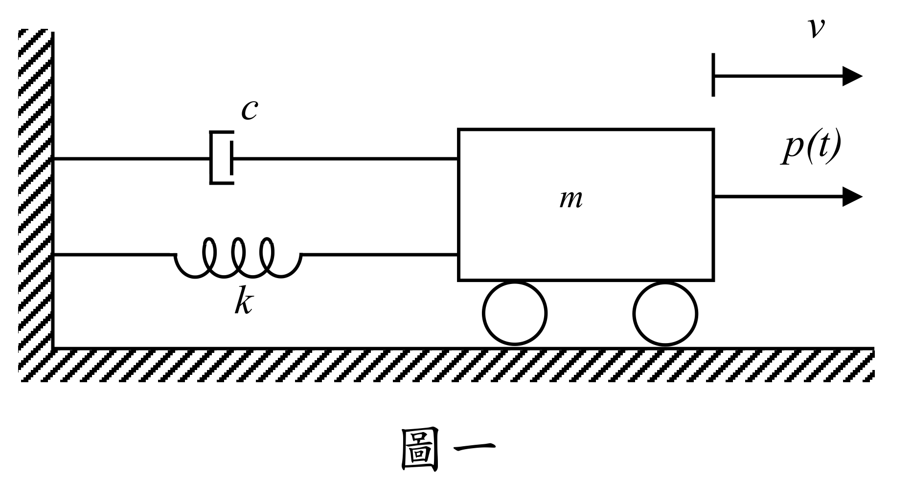
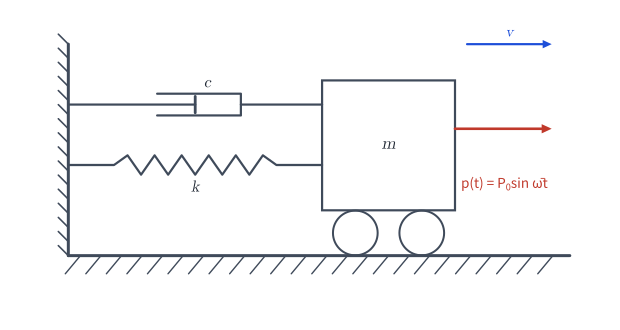
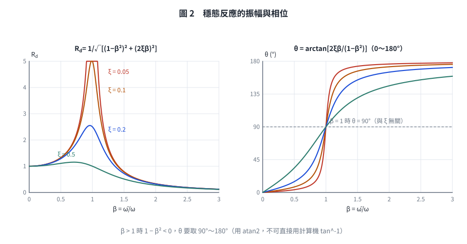

📄 題目正本：考卷原文・附圖・判讀清單（已確認）
SD-2015-1 題目正本
本檔只記錄考卷上寫了什麼、圖上畫了什麼，不含任何解法。解析見同資料夾
SD-2015-1.md。
判讀清單經使用者確認前，狀態為「待確認」；確認後本檔原則上不再修改（改動須回考卷原圖並記 log）。
| 項目 | 內容 |
|---|---|
| 考卷 | raw/exams/SD-2015_結構動力分析與耐震設計.pdf，第 1 頁（正面），第一題 |
| 考年 | 2015（民國104年）專技高考結構工程技師「結構動力分析與耐震設計」 |
| 配分 | 25 分 |
| 附圖 | SD-2015-1-fig-1.png（舊擷取，彈簧下方有游標）、SD-2015-1-fig-2.png（2026-11-15 由考卷 500 dpi 重擷取） |
| 判讀狀態 | 已確認（2026-11-15 使用者授權依 Claude 建議確認。原轉錄：2026-11-15 轉錄；PyMuPDF 110 dpi 整頁＋400–500 dpi 局部放大，PDF 文字層核對原文；盲讀於開啟解析前完成） |
1. 考卷原文（逐字）
一、有一單自由度系統如圖一，其運動方程式為 $m\ddot v(t)+c\dot v(t)+kv(t)=P_0\sin\bar\omega t$。只考慮穩態振動（Steady state），忽略暫態振動（Transient state）。試求其解。（25 分）
2. 考卷給的公式、附表與參數
- 考卷給運動方程式 $m\ddot v+c\dot v+kv=P_0\sin\bar\omega t$。
- 給定（符號）：$m$、$c$、$k$、$P_0$、$\bar\omega$；全題無數值。
- 考卷沒有給：初始條件（只求穩態，不需要）。
- 卷首注意事項：㈠可以使用電子計算器。㈡不必抄題，作答時請將試題題號及答案依照順序寫在試卷上，於本試題上作答者，不予計分。考試時間：2 小時。
3. 附圖

證據圖 SD-2015-1-fig-2.png（500 dpi 重擷取；舊圖 SD-2015-1-fig-1.png 內容相同，彈簧下方有游標）
圖面文字照錄：c、k、m、v、p(t)、圖一
4. 判讀清單
| # | 項目 | 判讀 | 圖上／題文依據 | 把握 |
|---|---|---|---|---|
| 1 | 系統 | 質塊 $m$ 以彈簧 $k$、阻尼器 $c$ 並聯接固定牆，輪子在地面上無摩擦水平運動 | 圖面 | 確定 |
| 2 | 外力 | $p(t)=P_0\sin\bar\omega t$，水平作用於質塊 | 題文方程式＋圖上 p(t) 箭頭 | 確定 |
| 3 | 位移 | $v$ 水平向右為正 | 圖上 v 箭頭 | 確定 |
| 4 | 所求 | 穩態解 $v_p(t)$（符號解），不含暫態 | 題文 | 確定 |
| 5 | 考卷沒有給 | 任何數值；阻尼比大小（不限小阻尼） | 題文 | 確定 |
轉錄：2026-11-15（SD-U1-3 題目正本推廣・批 2）
確認：2026-11-15 使用者授權依 Claude 建議確認（SD-U1-3 題目正本推廣・批 2，關卡一）
考題編號：SD-2015-1
主分類： SD-U1-3 單自由度、多自由度系統之動態分析及應用
副分類： SD-U1-1 結構動力基本性質及原理
分析方法： SDOF 穩態強迫振動解
標籤： SDOF 穩態振動 特解 頻率比 阻尼比 動力放大因子 相位角 諧振
1. 題目（考卷原文見題目正本）
考卷原文、公式／附表、附圖與判讀清單（已確認）見
SD-2015-1-problem.md。本節只列解題時最容易讀錯的地方與本解使用的記號；題意以題目正本為準。

重繪自考卷附圖，依題目正本判讀清單；本圖攔下的判讀錯誤：外力作用在質塊上，不是支承運動。
常見誤讀
| 項目 | 正確判讀 | 常見誤讀 |
|---|---|---|
| 系統 | 彈簧、阻尼器並聯接固定牆，外力 $P_0\sin\bar\omega t$ 直接作用於質塊（判讀 #1、#2） | 當成支承激振 |
| 所求 | 只求穩態解（符號解） | 加入暫態項 |
| 阻尼 | 不限小阻尼 | 只寫無阻尼解 |
本解記號： $\omega=\sqrt{k/m}$、$\beta=\bar\omega/\omega$、$\xi=c/(2m\omega)$；$\theta$ 為相位角。
2. 破題思路 (Problem Solving Strategy)
本題是結構動力學中最基礎的「單自由度阻尼系統受諧和外力作用」之穩態反應推導。破題關鍵在於：
- 忽略暫態反應：即只需求解運動方程式的特解 (Particular Solution)，齊次解 (Homogeneous Solution) 因阻尼而衰減，依題意不需考慮。
- 假設特解形式：由於外力為正弦函數 $P_0\sin\bar{\omega}t$，可假設穩態反應包含正弦與餘弦分量 $v(t) = A\cos\bar{\omega}t + B\sin\bar{\omega}t$。
- 無因次參數代換：利用自然頻率 $\omega = \sqrt{k/m}$、阻尼比 $\xi = \frac{c}{2m\omega}$、頻率比 $\beta = \frac{\bar{\omega}}{\omega}$ 將常係數轉化為標準的動力無因次參數，解出係數並合併為振幅與相位角形式。
3. 解題戰略地圖與陷阱分析 (Strategic Roadmap & Trap Analysis)
四大陷阱：
| # | 陷阱 | 正確處理 |
|---|---|---|
| 1 | 混淆暫態與穩態 | 題目明確指出僅求穩態振動，不需解齊次方程式去匹配初始條件。 |
| 2 | 符號與參數定義不清 | 必須清楚定義 $\omega$、$\xi$、$\beta$ 等參數，否則推導過程會非常冗長且易出錯。 |
| 3 | 特解假設不完整 | 若只假設 $v(t) = C\sin\bar{\omega}t$，會因為阻尼項 $c\dot{v}(t)$ 產生 $\cos$ 項而無法平衡。必須同時包含 $\sin$ 與 $\cos$ 項，或直接假設為 $v(t) = \rho\sin(\bar{\omega}t-\theta)$。 |
3.5 變數層次分析（Variable Hierarchy Analysis）
複習提示：第一次解題後，在每個卡住的知識點旁標記
⚠；第二次複習時只看有⚠的項目。
最終目標
[推導出穩態特解的振幅 ρ 與相位角 θ]
本題關鍵公式（依計算順序）
$\boxed{\cdot}$ = 需由前步驟推導，非題目直接給定的變數
$$\text{Step 1: } \omega = \sqrt{\frac{k}{m}}, \quad \xi = \frac{c}{2m\boxed{\omega}}, \quad \beta = \frac{\bar{\omega}}{\boxed{\omega}}$$
$$\text{Step 2: } v_p(t) = A\cos\bar{\omega}t + B\sin\bar{\omega}t$$
$$\text{Step 3: } \boxed{A} = -\frac{P_0}{k} \frac{2\boxed{\xi}\boxed{\beta}}{(1-\boxed{\beta}^2)^2 + (2\boxed{\xi}\boxed{\beta})^2}, \quad \boxed{B} = \frac{P_0}{k} \frac{1-\boxed{\beta}^2}{(1-\boxed{\beta}^2)^2 + (2\boxed{\xi}\boxed{\beta})^2}$$
$$\text{Step 4: } \rho = \sqrt{\boxed{A}^2 + \boxed{B}^2}, \quad \tan\theta = \frac{-\boxed{A}}{\boxed{B}}$$
L1：題目直接給定
看到題目就能讀出的數字或符號，不需要任何公式。
| 符號 | 數值/參數 | 說明 |
|---|---|---|
| $m$ | $m$ | 系統質量 |
| $c$ | $c$ | 系統阻尼係數 |
| $k$ | $k$ | 系統彈簧勁度 |
| $P_0$ | $P_0$ | 諧和外力振幅 |
| $\bar{\omega}$ | $\bar{\omega}$ | 諧和外力激振頻率 |
L2：需知識點推導
需要知道公式名稱與適用條件，套入 L1 即可算出。
Step 1：系統無因次參數代換
| 符號 | 公式/來源 | 卡關? |
|---|---|---|
| $\omega$ | $\sqrt{k/m}$ | |
| $\xi$ | $c/(2m\omega)$ | |
| $\beta$ | $\bar{\omega}/\omega$ |
Step 2：特解係數聯立與求解
| 符號 | 公式/來源 | 卡關? |
|---|---|---|
| $A$ | $-B \frac{2\xi\beta}{1-\beta^2}$ （從 $\cos$ 項係數平衡推得） | |
| $B$ | $\frac{P_0}{k} \frac{1-\beta^2}{(1-\beta^2)^2 + (2\xi\beta)^2}$ （從 $\sin$ 項係數平衡推得） |
Step 3：轉換為極座標振幅與相角
| 符號 | 公式/來源 | 卡關? |
|---|---|---|
| $\rho$ | $\sqrt{A^2 + B^2} = \frac{P_0/k}{\sqrt{(1-\beta^2)^2 + (2\xi\beta)^2}}$ | |
| $\theta$ | $\tan^{-1}\left(\frac{-A}{B}\right) = \tan^{-1}\left(\frac{2\xi\beta}{1-\beta^2}\right)$ |
L3：深層知識（不懂就卡住）
L2 中某些公式本身需要背景概念才能正確應用的知識點。
| 知識點 | 說明 | 卡關? |
|---|---|---|
| 特解假設形式 | 為何假設特解時必須同時包含 $\sin$ 與 $\cos$？因為系統存在阻尼 $c\dot{v}$，對 $\sin$ 微分會產生 $\cos$，若不包含 $\cos$ 則無法平衡方程式。 | |
| 無因次化技巧 | 為何要刻意提出 $k$ 並換成 $\xi$ 與 $\beta$？為了將繁雜的參數簡化為具有物理意義的動力放大因子 $R_d$ 與相位角 $\theta$，這是動力學的標準流程。 |
4. 核心推導與計算過程 (Core Derivations & Calculations)
Step 1：定義動力特性參數
原運動方程式為：
$$m\ddot{v}(t) + c\dot{v}(t) + kv(t) = P_0\sin\bar{\omega}t$$
將等式兩邊同除以 $m$：
$$\ddot{v}(t) + \frac{c}{m}\dot{v}(t) + \frac{k}{m}v(t) = \frac{P_0}{m}\sin\bar{\omega}t$$
代入系統參數 $\omega^2 = \frac{k}{m}$ 及 $\frac{c}{m} = 2\xi\omega$：
$$\ddot{v}(t) + 2\xi\omega\dot{v}(t) + \omega^2 v(t) = \frac{P_0}{m}\sin\bar{\omega}t$$
Step 2：假設穩態特解
穩態反應即為非齊次常微分方程式的特解 $v_p(t)$。因等式右邊為諧和函數且系統具有阻尼，響應將包含正弦與餘弦分量，故假設：
$$v(t) = A\cos\bar{\omega}t + B\sin\bar{\omega}t$$
對其微分可得速度與加速度：
$$\dot{v}(t) = -A\bar{\omega}\sin\bar{\omega}t + B\bar{\omega}\cos\bar{\omega}t$$
$$\ddot{v}(t) = -A\bar{\omega}^2\cos\bar{\omega}t - B\bar{\omega}^2\sin\bar{\omega}t$$
Step 3：代入運動方程式並整理
將 $v, \dot{v}, \ddot{v}$ 代回原方程式：
$$m(-A\bar{\omega}^2\cos\bar{\omega}t - B\bar{\omega}^2\sin\bar{\omega}t) + c(-A\bar{\omega}\sin\bar{\omega}t + B\bar{\omega}\cos\bar{\omega}t) + k(A\cos\bar{\omega}t + B\sin\bar{\omega}t) = P_0\sin\bar{\omega}t$$
將含有 $\cos\bar{\omega}t$ 與 $\sin\bar{\omega}t$ 的項分別合併比較係數：
對於 $\cos\bar{\omega}t$ 項（等式右邊係數為 0）：
$$-mA\bar{\omega}^2 + cB\bar{\omega} + kA = 0 \implies A(k - m\bar{\omega}^2) + B(c\bar{\omega}) = 0$$
對於 $\sin\bar{\omega}t$ 項（等式右邊係數為 $P_0$）：
$$-mB\bar{\omega}^2 - cA\bar{\omega} + kB = P_0 \implies -A(c\bar{\omega}) + B(k - m\bar{\omega}^2) = P_0$$
Step 4：導入頻率比並求解 A 與 B
提出靜力勁度 $k$，並引入頻率比 $\beta = \frac{\bar{\omega}}{\omega}$：
- $k - m\bar{\omega}^2 = k(1 - \frac{m\bar{\omega}^2}{k}) = k(1 - \frac{\bar{\omega}^2}{\omega^2}) = k(1 - \beta^2)$
- $c\bar{\omega} = c\omega\beta = (2\xi m\omega)\omega\beta = 2\xi k \beta$
代回方程式組得：
$$A \cdot k(1-\beta^2) + B \cdot 2\xi k\beta = 0$$
$$-A \cdot 2\xi k\beta + B \cdot k(1-\beta^2) = P_0$$
將等式同除以 $k$：
$$A(1-\beta^2) + B(2\xi\beta) = 0 \quad \text{--- (1)}$$
$$-A(2\xi\beta) + B(1-\beta^2) = \frac{P_0}{k} \quad \text{--- (2)}$$
由 (1) 式可得 $A = -B \frac{2\xi\beta}{1-\beta^2}$，代入 (2) 式：
$$-\left(-B \frac{2\xi\beta}{1-\beta^2}\right)(2\xi\beta) + B(1-\beta^2) = \frac{P_0}{k}$$
$$B \left[ \frac{(2\xi\beta)^2}{1-\beta^2} + \frac{(1-\beta^2)^2}{1-\beta^2} \right] = \frac{P_0}{k}$$
$$B = \frac{P_0}{k} \frac{1-\beta^2}{(1-\beta^2)^2 + (2\xi\beta)^2}$$
將 $B$ 代回求 $A$：
$$A = -\frac{P_0}{k} \frac{2\xi\beta}{(1-\beta^2)^2 + (2\xi\beta)^2}$$
Step 5：化簡為振幅與相角形式 (極座標式)
穩態解可表示為：
$$v(t) = \frac{P_0}{k} \frac{1}{(1-\beta^2)^2 + (2\xi\beta)^2} \left[ -2\xi\beta\cos\bar{\omega}t + (1-\beta^2)\sin\bar{\omega}t \right]$$
若令振幅 $\rho = \sqrt{A^2 + B^2}$：
$$\rho = \frac{P_0}{k} \frac{\sqrt{(-2\xi\beta)^2 + (1-\beta^2)^2}}{(1-\beta^2)^2 + (2\xi\beta)^2} = \frac{P_0/k}{\sqrt{(1-\beta^2)^2 + (2\xi\beta)^2}}$$
定義相位角 $\theta$，使得 $A = -\rho\sin\theta$ 及 $B = \rho\cos\theta$：
$$\tan\theta = \frac{-A}{B} = \frac{2\xi\beta}{1-\beta^2}$$
最終可將穩態解寫作較簡潔的相角形式：
$$v(t) = \rho\sin(\bar{\omega}t - \theta)$$

圖 2 穩態振幅與相位（阻尼比取四個值示意）。$\beta>1$ 時相位角在 90°～180°，直接用計算機 $\tan^{-1}$ 會落到錯的象限。
5. 結論與考點覆盤 (Conclusion & Review)
本題求得之穩態振動位移（特解）為：
$$v(t) = \rho\sin(\bar{\omega}t - \theta)$$
其中：
- 靜位移：$(v_{st})_0 = \frac{P_0}{k}$
- 動力放大因子：$R_d = \frac{1}{\sqrt{(1-\beta^2)^2 + (2\xi\beta)^2}}$
- 穩態振幅：$\rho = (v_{st})_0 \cdot R_d$
- 相位角：$\theta = \tan^{-1}\left(\frac{2\xi\beta}{1-\beta^2}\right)$
修正日期：2026-11-15（§1 改為指向題目正本，重繪附圖 figs/SD-2015-1-fig-1-problem.svg）
圖解補繪：2026-11-15（向量圖，腳本 gen_SD-2015-1.py，可重跑；非勘誤、答案不變）